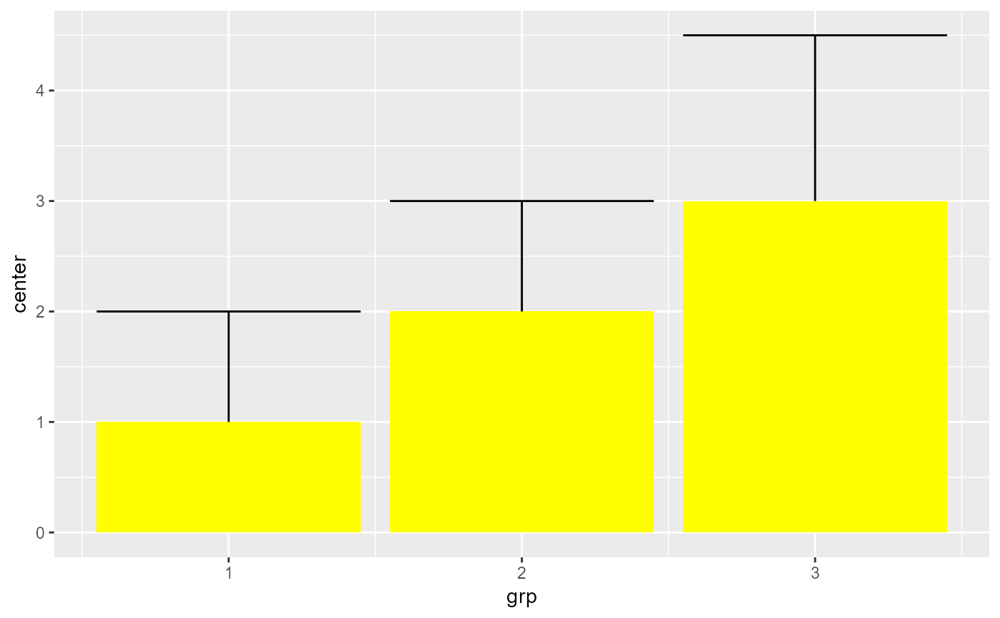
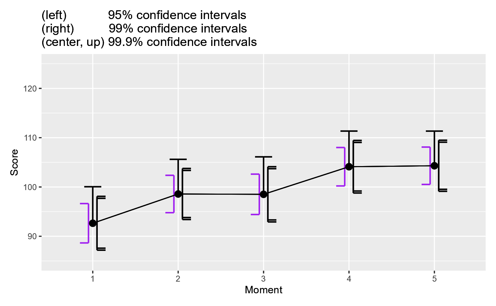

geom_superberrorbar for expanded error bar displays
Source:R/geom_superberrorbar.R
geom_superberrorbar.Rdgeom_superberrorbar() is a geom for ggplots; it is based on
the original geom_errorbar (and is totally compatible with it) but
expands this geom in four different ways. First, it is possible to
decide whether the error bar tips are unidirectional, pointing to
the "left" or to the "right" or if they go in "both" directions.
Second, it is possible to "double" or "triple" the horizontal marks
at the extremities of the error bar, with a "tipgap" of your liking.
Third, an additiona characteristic is vcolour to set a different colour
for the vertical part of the error bar. The colour can also be "NA" to
have it invisible. Lastly, the error bar can be pointing "up" and "down"
or go in "both" (the default)
geom_superberrorbar( mapping = NULL, data = NULL, stat = "identity", position = "identity", direction = "both", tipformat = "single", tipgap = 0.1, ..., na.rm = FALSE, orientation = NA, show.legend = NA, inherit.aes = TRUE )
Arguments
| mapping | (as usual) see geom_errorbar |
|---|---|
| data | (as usual) see geom_errorbar |
| stat | (as usual) see geom_errorbar |
| position | (as usual) see geom_errorbar |
| direction | (NEW) "left", "right" or "both" (Default is "both") |
| tipformat | (NEW) "single", "double" or "triple" to add additional marker lines to the tips (default is "single") |
| tipgap | (NEW) The spacing between the markers when "double" or "triple" is used (default 0.1) |
| ... | all additional parameters are sent to the underlying geom_path |
| na.rm | (as usual) see geom_errorbar |
| orientation | (as usual) see geom_errorbar |
| show.legend | (as usual) see geom_errorbar |
| inherit.aes | (as usual) see geom_errorbar |
Value
a layer containing error bars in a ggplot object
Examples
library(superb) # to import the geom_superberrorbar library(ggplot2) # let's have a fake data frame dta <- data.frame(grp = c(1,2,3), center=c(1,2,3), width = c(1,1,1.5) ) # an example with none of the new features = a regular error bar ggplot(dta, aes_string(ymin="center-width", ymax="center+width", x = "grp" ) ) + geom_superberrorbar() # an example with left-pointing error bars ggplot(dta, aes_string(ymin="center-width", ymax="center+width", x = "grp" ) ) + geom_superberrorbar(direction="left", width = 0.1)# an example with doubled-tipped error bar and the default tipgap ggplot(dta, aes_string(ymin="center-width", ymax="center+width", x = "grp" ) ) + geom_superberrorbar(tipformat = "double", width = 0.1)
# an example with left-pointing tripled-tip error bars with small gaps ggplot(dta, aes_string(ymin="center-width", ymax="center+width", x = "grp" ) ) + geom_superberrorbar(tipformat = "triple", width= 0.1, tipgap = 0.04, direction = "left") # an example with unidirectional error bars (here "up" bars) ggplot(dta, aes_string(y= "center", ymin="center-width", ymax="center+width", x = "grp" ) ) + geom_bar(stat="identity", fill = "yellow") + geom_superberrorbar(pointing = "up")  # a final example with two-coloured, left-pointing tripled-tip error bars with small gaps ggplot(dta, aes_string(ymin="center-width", ymax="center+width", x = "grp" ) ) + geom_superberrorbar(tipformat = "triple", width= 0.1, tipgap = 0.04, direction = "left", colour = "black", vcolour = "orange")
# This new geom is integrated inside superbPlot() so that you can vary the # error bar shapes. Let's see examples: # using GRD to generate random data with a moderate effect options(superb.feedback = 'none') # shut down 'warnings' and 'design' interpretation messages test <- GRD(WSFactors = "Moment(5)", Effects = list("Moment" = extent(10) ), Population = list(mean = 100, stddev = 25, rho = 0.8) ) ornate = list( labs(title =paste("(left) 95% confidence intervals", "\n(right) 99% confidence intervals", "\n(center, up) 99.9% confidence intervals")), xlab("Moment"), ylab("Score"), coord_cartesian( ylim = c(85,110) ) ) plt1 <- superbPlot(test, WSFactors = "Moment(5)", variables = c("DV.1","DV.2","DV.3","DV.4","DV.5"), adjustments=list(purpose = "difference", decorrelation = "CA"), errorbarParams = list(direction = "left", color="purple", width = 0.2, position = position_nudge(-0.05) ), gamma = 0.95, plotStyle = "line" ) + ornate plt2 <- superbPlot(test, WSFactors = "Moment(5)", variables = c("DV.1","DV.2","DV.3","DV.4","DV.5"), adjustments=list(purpose = "difference", decorrelation = "CA"), errorbarParams = list(direction = "right", tipgap = 0.25, tipformat = "double", width = 0.2, position = position_nudge(+0.05) ), gamma = 0.99, plotStyle = "line" ) + ornate plt3 <- superbPlot(test, WSFactors = "Moment(5)", variables = c("DV.1","DV.2","DV.3","DV.4","DV.5"), adjustments=list(purpose = "difference", decorrelation = "CA"), errorbarParams = list(direction = "both", tipformat = "single", pointing="up", width = 0.2, position = position_nudge(0) ), gamma = 0.999, plotStyle = "line" ) + ornate # transform the ggplots into "grob" so that they can be manipulated plt1 <- ggplotGrob(plt1) plt2 <- ggplotGrob(plt2 + makeTransparent() ) plt3 <- ggplotGrob(plt3 + makeTransparent() ) # put the grobs onto an empty ggplot ggplot() + annotation_custom(grob=plt1) + annotation_custom(grob=plt2) + annotation_custom(grob=plt3) 